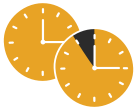
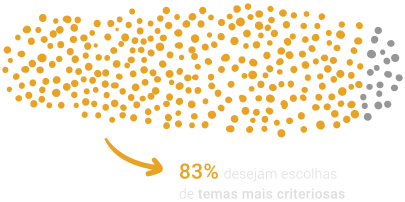
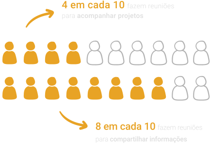

Reunião nem sempre é o melhor caminho
Sete pessoas reunidas durante uma hora representam sete horas de trabalho e de salário investidos; não apenas uma hora de reunião.
reuniões demandam muito tempo

23 horas por semana é a média que chefes passam em reuniões
são 2 meses de trabalho por ano
Fonte: HBR - Harvard Business Review (2017)
interrompem processos criativos
65%
dos chefes interrompem tarefas que estavam realizando para participar de reuniões
67%
dos trabalhadores dizem que reuniões excessivas os impedem de realizar seu trabalho com maior qualidade
Fonte: HBR (2017) e CNBC (2019)
e representam grande custo financeiro
Fonte: Doodle (2019)
No MPRJ o cenário é bem parecido
Em maio de 2020, o Inova_MPRJ realizou pesquisa com 223 integrantes da instituição. O resultado mostrou que precisamos escolher melhor os temas das reuniões que realizamos e que a maior parte delas poderia ser substituída por comunicação assíncrona - como e-mails bem elaborados.

O Inova_MPRJ acredita que o caminho para diminuir as interrupções passa por questionar como, quando e por quais motivos nos reunimos. E por refletir sobre as razões de privilegiarmos a comunicação em tempo real na maior parte do tempo.

A solução é repensar a comunicação no trabalho, dando maior valor a práticas de comunicação assíncrona e investindo em ferramentas que facilitam essa mudança.